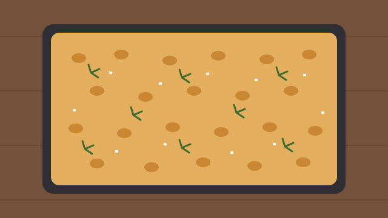

Overnight focaccia with rosemary and sea salt
There is a particular sound a good focaccia makes when you press it fresh from the oven: a soft crackle, like walking on frost. It took me most of a winter to get that sound reliably, and the breakthrough was not a technique so much as patience. This dough does almost all of its work in the refrigerator, overnight, while you sleep.
I came to focaccia sideways. For years I baked sandwich loaves, and flatbreads seemed like a lesser cousin, something to make when there was no time for the real thing. Then a friend brought one to a picnic, dimpled and glossy and smelling of rosemary, and I spent the afternoon trying to work out how something so simple could taste so complicated.
The answer, it turns out, is time and olive oil. A long, cold rise lets the flour develop flavour that a quick dough never reaches, and a generous pool of oil in the tin gives you a base that fries rather than bakes, which is where that crackle comes from.

Before you start
You will need a 23 × 33 cm baking tin, a large bowl with a lid or a plate to cover it, and room in the refrigerator. The dough is very wet, so resist the urge to add more flour. Wet hands and a light touch are all it needs.
Ingredients
- 500 g strong white bread flour
- 400 g lukewarm water
- 10 g fine salt
- 4 g instant yeast
- 60 ml extra-virgin olive oil, plus more for drizzling
- 2 sprigs fresh rosemary
- Flaky sea salt, for the top
Method
- In the evening, mix the flour, water, salt and yeast in the bowl until no dry flour remains. The dough will look shaggy, and that is fine.
- Cover and leave for 30 minutes, then wet your hand and fold the dough over itself four times, turning the bowl a quarter turn between folds.
- Cover the bowl and refrigerate for 12 to 18 hours. The dough should roughly double and show bubbles at the sides.
- Pour the olive oil into the tin, tip the cold dough into it and turn it once to coat. Leave it somewhere warm for two to three hours, until it relaxes into the corners and looks puffy.
- Heat the oven to 230 °C. Oil your fingers and press deep dimples all over the dough, right down to the tin.
- Scatter the rosemary leaves and flaky salt over the top, drizzle with a little more oil and bake for 22 to 25 minutes, until deep golden.
- Lift it onto a rack straight away so the base stays crisp, and let it cool for at least 15 minutes before cutting.
Notes
If your kitchen is cold, the second rise can take longer than three hours; judge by how the dough looks, not by the clock. Leftover focaccia keeps for a day wrapped in a cloth, and it revives beautifully after five minutes in a hot oven.
Once you have the method down, the toppings are yours to play with. Halved cherry tomatoes, thin slices of red onion and a handful of olives all work well; press them in firmly when you dimple the dough so they stay put.